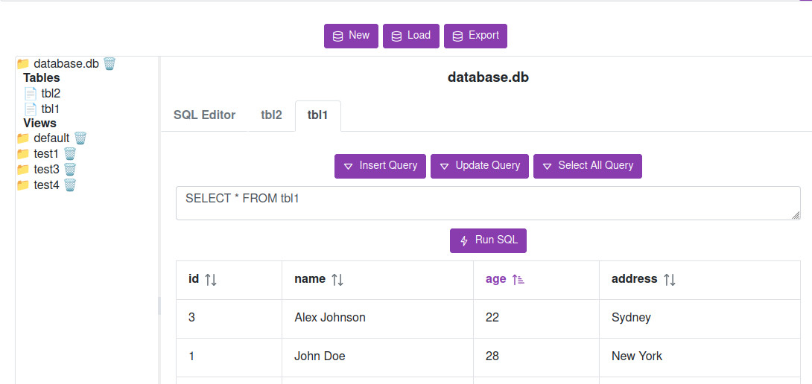

Run, edit, and generate SQL queries directly in your browser — completely free
Open Free ToolNo installation • Works on any device • Simple & fast

Execute SQL queries instantly in your browser without installing anything.
The tool generates SQL queries for you — you can easily modify and customize them.
View and explore your SQLite tables and data in a simple interface.
Create, delete, import, and export SQLite databases with ease.
Create, modify, and delete tables quickly and intuitively.
Create, edit, and remove database views effortlessly.
Minimal interface designed for speed and ease of use.
No installation. No setup. Open the tool and start working with your database in seconds.
Launch Free SQLite ToolThis free SQLite online editor allows you to run SQL queries, generate SQL automatically, and manage your database without installation. Use it as a SQLite viewer, SQL editor, and database management tool directly in your browser.
Whether you need a quick SQLite viewer, an online SQL editor, or a simple database tool, this service works instantly on any device with no setup required.